Work 003 · 2026 · AI-assisted design
Architecture App
與 AI 協作的網站與專題導覽
國立臺灣科技大學建築研究所 115-1 建築 App
指導 林裕傑教授
學生 余致賢
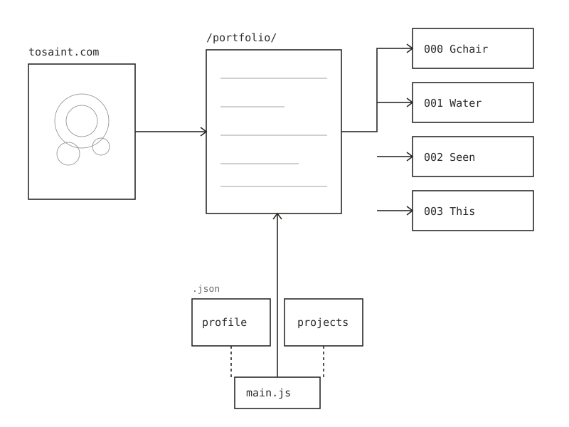
個人網站規劃 · Website
Assignment 1 · Portfolio / Website CV
講稿 Script
01 · 概念 Idea
大家好，我是余致賢。個人網站的設計靈感來自《莊子・人間世》的「虛室生白，吉祥止止」——當空間澄澈，美好便有停留的餘地。因此，整個網站以「留白」為設計核心。
Hello everyone, I’m ChihHsien Yu. The design of my personal website was inspired by a line from Zhuangzi, in the chapter “In the Human World”: “An empty room fills with light, and good things come to stay.” To me, this means that when a space is clear, there is room for good things to stay. So, the main idea of my website is to leave space open.
02 · 首頁與作品 Home and works
首頁意象取自我的作品《水聲木》，以溫潤的米白紙色為底，當指尖觸碰或滑鼠滑過，畫面便會漾開層層漣漪，緩緩浮現又散去。網站精簡個人資訊，讓焦點回歸創作；作品先以黑白線稿呈現，進入內頁後，才展開實物的色彩與材質細節。
The home page is based on my work, Water’s Echo in Wood. It has a warm, off-white background, like paper. When you touch the screen or move your mouse across it, rings spread out like ripples on water. They slowly appear and fade away. I keep personal information brief so visitors can focus on my work. Each work first appears as a black-and-white line drawing. When visitors open its page, they can see photos showing its real colors and materials.
03 · 與 AI 協作 Working with AI
網站由我與 AI 協作完成。我負責主導版面架構、敘事順序與互動邏輯，並在過程中不斷審視修正。例如最初曾嘗試以「建築製圖圖框」作為版型，卻發現過於拘束，最終決定捨去外框，退回純粹的留白與線稿，讓視覺與理念達成一致。
I built this website with AI. I led the page design, the order of the content, and how the site responds to visitors. I kept checking the results and making changes. For example, I first tried a frame like those used in building drawings, but it felt too limiting. I later removed the frame and returned to open space and simple lines, so the design would match my main idea.
04 · 技術 How it works
技術上，網站將資料與版面分離，以 profile.json 與 projects.json 管理內容，由 JavaScript 自動產生作品列表、目錄與履歷，方便日後更新；作品內頁則依創作特性個別設計。全站以 Git 管理版本，透過 GitHub Pages 發布並連結自訂網域 tosaint.com，結構與維護方式亦記錄於英文 README。
The website keeps its content separate from its page design. I use profile.json and projects.json to manage the content. JavaScript automatically builds the work list, index, and CV, making future updates easier. Each work also has its own page design to suit its needs. I use Git to save and track different versions, and GitHub Pages to put the site online at my own web address, tosaint.com. An English README explains how the site is organized and how to update it.
前後比對 Before and after
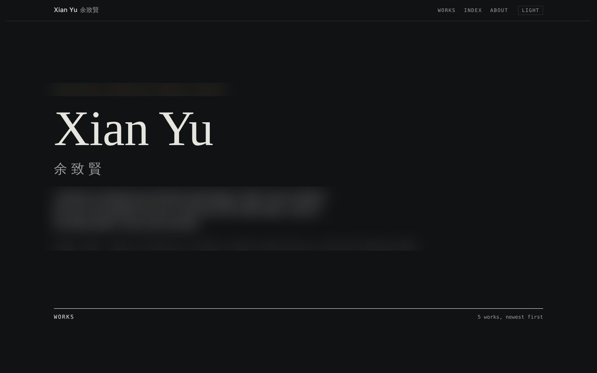
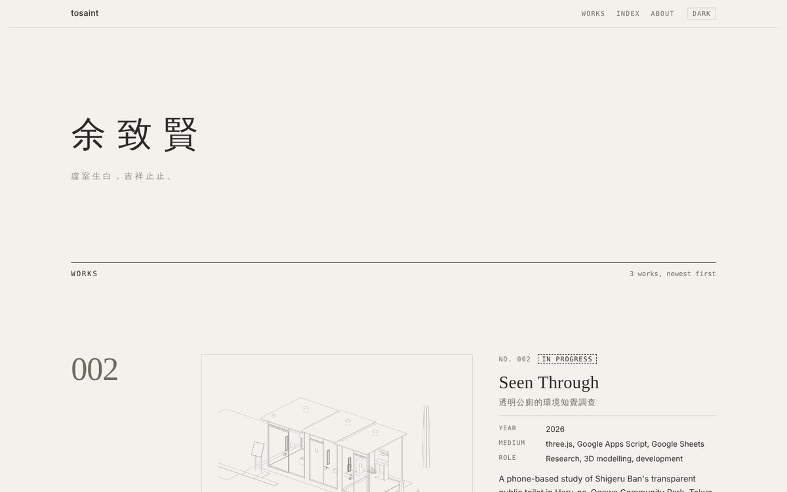
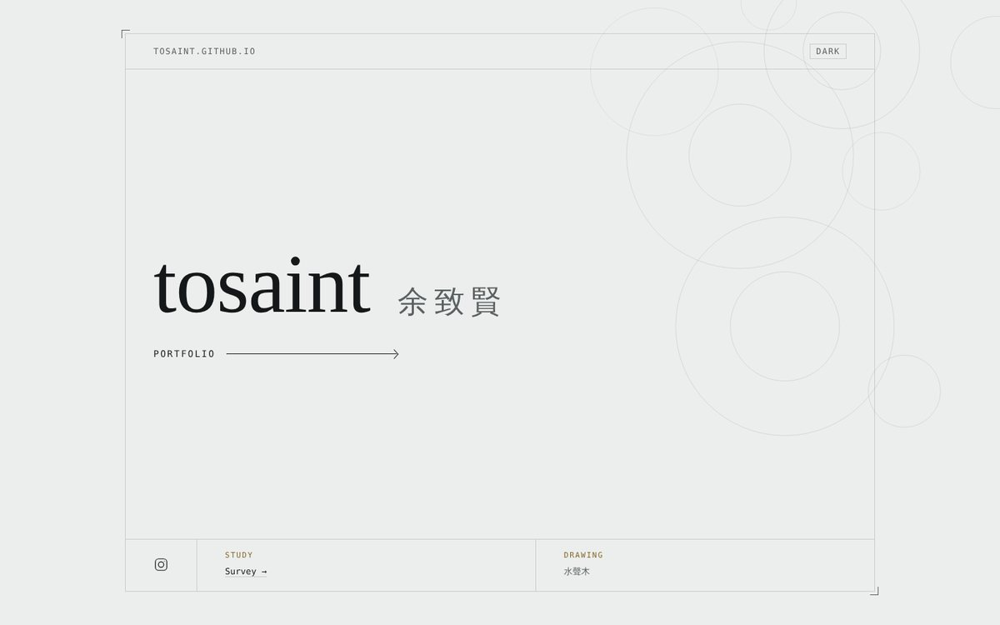
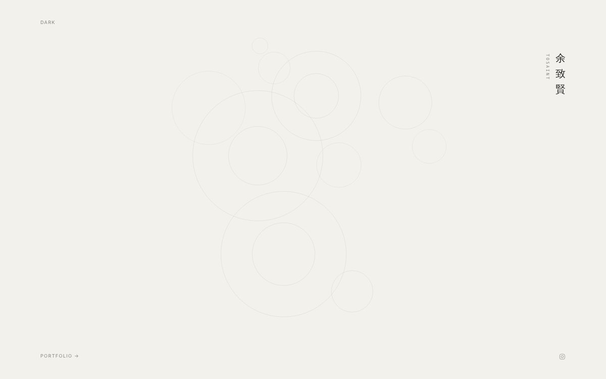
圖框讓畫面顯得拘束；拿掉之後，留白本身成為版面。
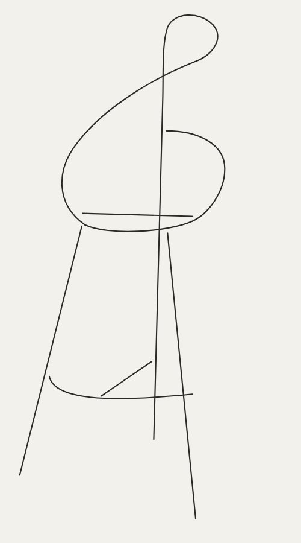
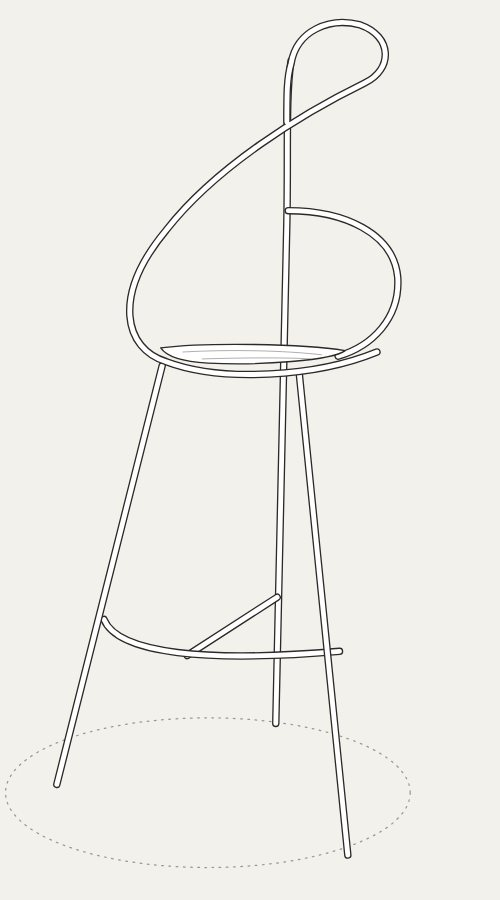
AI 第一版線稿像兒童畫。我要求依照片重描，畫出鋼管的粗細與交疊。
內容更新流程 Content workflow
新增作品只要在 projects.json 加一筆；HTML 是骨架，CSS 負責樣式，JavaScript 把 JSON 的內容填進頁面。每次修改都以 Git 提交。
期末專題提案 · Final project
Stage 1 · Concept proposal
走遍 17 間 · 17 toilets visited
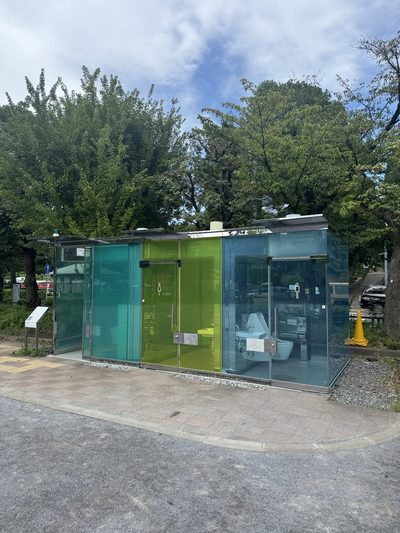
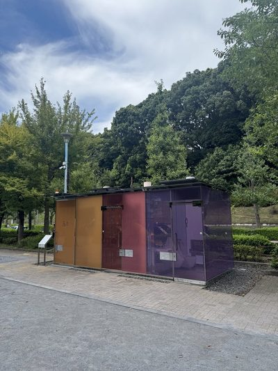
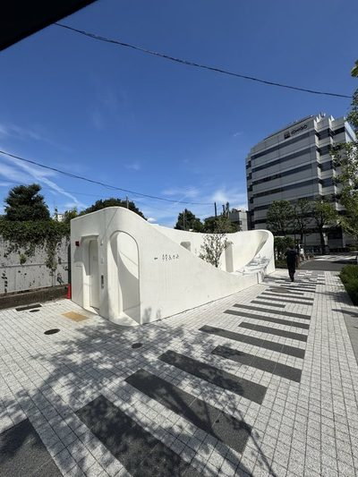
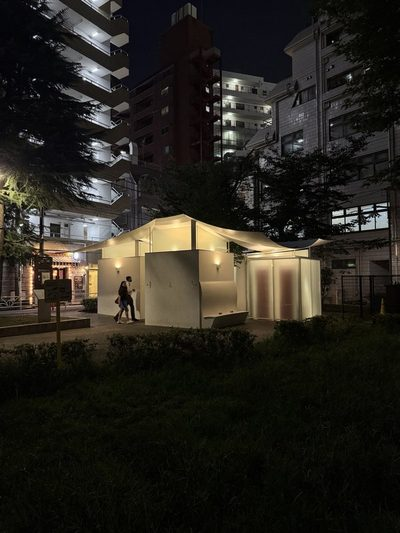
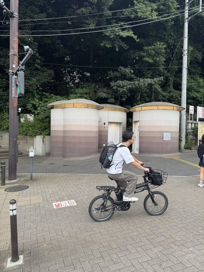
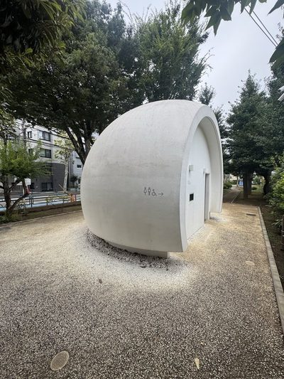
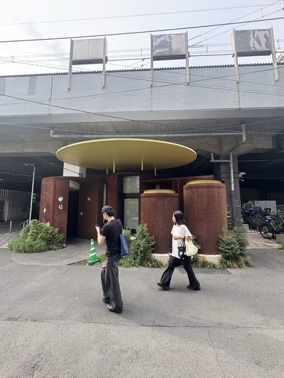
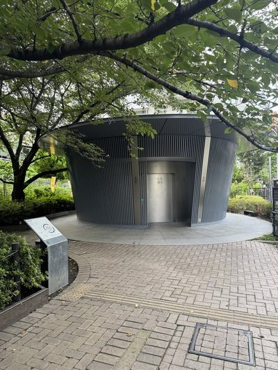
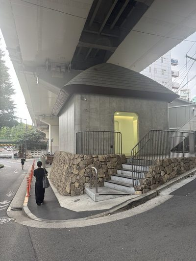
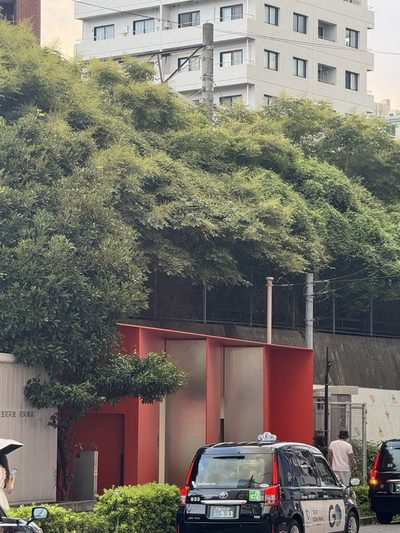
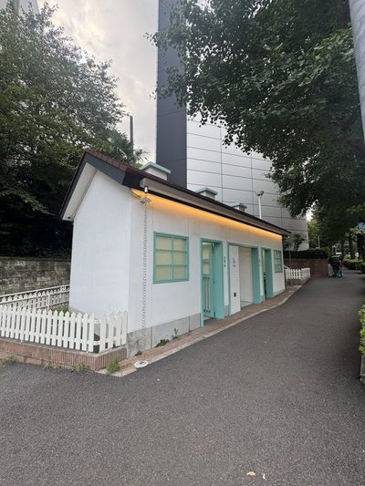
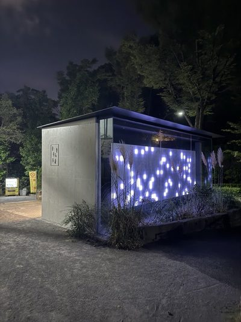
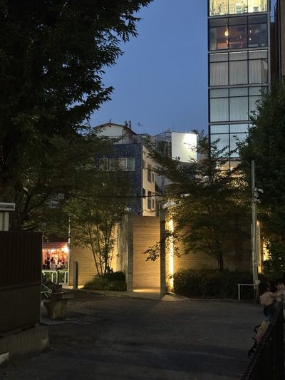
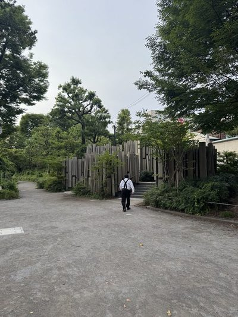
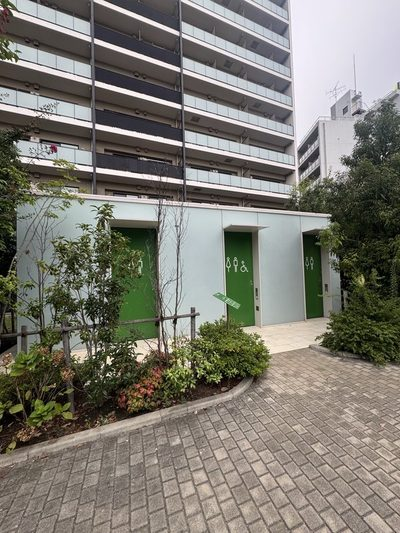
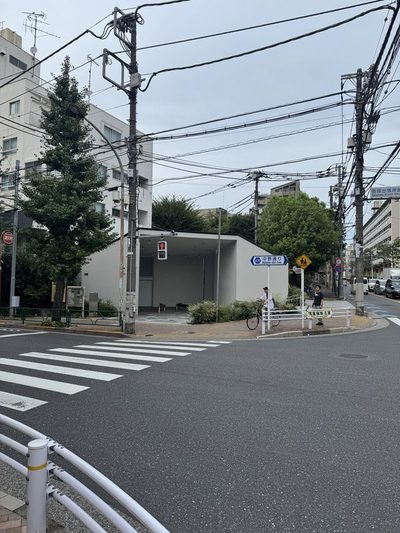
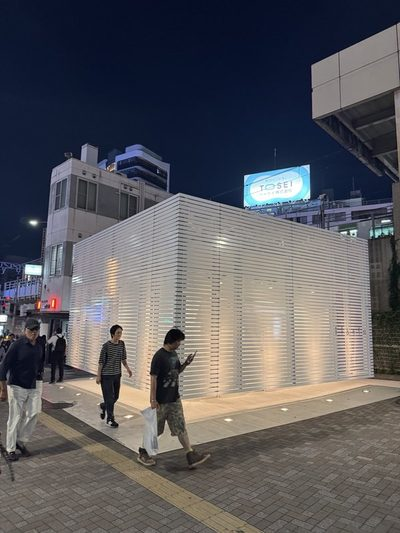
框線：坂茂的兩座透明公廁 · 照片：作者攝於澀谷，2026 年夏
講稿 Script
01 · 情境 Context
我的期末專題靈感，來自東京的公共廁所。今年暑假，我特地跑去澀谷，把「THE TOKYO TOILET」計畫的 17 間公廁全部走遍了。其中最讓我好奇的，是建築大師坂茂設計的透明公廁。它的概念很妙：沒人用的時候，從外面可以看光光，確認裡面乾不乾淨、有沒有躲人；等你進去一上鎖，玻璃才會通電變成霧面。坂茂認為，「進去前看得見、進去後看不見」，就能同時給你安全感與隱私。
My final project was inspired by public toilets in Tokyo. This summer, I went to Shibuya and visited all 17 toilets in “THE TOKYO TOILET” project. The ones that interested me most were the transparent toilets designed by architect Shigeru Ban.
The idea is simple: when no one is using the toilet, you can see inside to check whether it is clean or if anyone is hiding there. Once you go in and lock the door, the glass turns frosted. Ban’s idea is that seeing inside before entering, and being hidden after locking, can provide both safety and privacy.
02 · 問題與證據 Problem and evidence
聽起來很完美對吧？但說實話，我站在現場，還是不太敢進去用。後來我發現不只我這麼膽小，2026 年一項平面分析研究也指出，坂茂這兩座透明廁所的隱私指數，在所有案例裡是墊底的。不過那只是幾何計算，不能代表人的真實感受。所以我很想知道：進去前看得見，真的比較安心嗎？
That sounds perfect, right? But honestly, when I stood there, I still felt nervous about using it.
A 2026 study of floor plans also found that Ban’s two transparent toilets had the lowest privacy scores among the cases studied. However, these scores came from calculations based on the plans. They do not directly show how people feel.
So, I want to ask: does being able to see inside before entering really make people feel safer?
03 · 使用者與現行做法 Users and current methods
對想在蓋出來之前先測試設計的建築師與研究者來說，現在常用的做法不外乎發照片問卷，或是去現場攔人訪問。但照片看不到玻璃「由透變霧」的那個瞬間，去現場又沒辦法控制觀看角度和路人干擾。
This tool is for architects and researchers who want to test a design before it is built. Common methods include surveys with photos and interviews at the site.
However, photos cannot show the moment when glass changes from clear to frosted. At the site, it is also harder to keep viewing positions and people passing by the same for each test.
04 · 導入模擬 Using a 3D model
既然現場太難控制，我就決定把廁所搬進手機裡。我根據公開的平面圖和自己拍的照片，與 AI 協作，用 three.js 做出其中一座、春之小川社區公園公廁的手機版 3D 調查工具。過程中由我主導研究問題和實驗流程，並一路檢查、修正 AI 的成果。
Since the real site is hard to control, I decided to bring the toilet into a phone.
Using public floor plans and my own photos, I worked with AI to build a phone-based 3D survey tool with three.js. The model is based on the toilet in Haru-no-Ogawa Community Park. I led the research questions and test process, and kept checking and correcting the AI’s work.
05 · 流程 How it works
整個流程是這樣的：受試者先同意參加、練習操作，再選一間廁所，接著輪流體驗四種情境：不透明、霧面、上鎖才變霧，還有透明。每個人的體驗順序都不一樣，由系統自動分派；系統也會規定最少要看幾秒，外面的路人則照固定腳本走過去。受試者進去前，先評估「我覺得會怎麼樣」；坐下觀察後，再憑記憶評一次。如果真的判斷不了，可以選「說不上來」，這個答案會另外記錄，不會混進分數裡。
Here is how it works. Participants first agree to join, practice the controls, and choose a booth. They then experience four wall settings: solid walls that block the view, frosted glass, glass that turns frosted after locking, and clear glass.
The system assigns different orders to participants. It also sets a minimum viewing time, while people outside walk past in a fixed pattern.
Before entering, participants rate what they expect to feel. After sitting down and looking around, they rate what they remember feeling. If they cannot judge, they can choose “not sure.” This answer is saved separately and is not counted as a score.
06 · 一句話定義 Given → performs → produces
簡單來說：輸入情境設定和受試者的評分，系統負責控制流程、把每個人前後的答案對應整理好，再透過 Google Apps Script 以 JSON 存進 Google Sheets，最後產出一份可以比較隱私感與安全感的資料集。
In one sentence: given the wall settings and participants’ ratings, the system controls the test process, matches each person’s before-and-after answers, and saves them as JSON through Google Apps Script to Google Sheets. The result is a dataset for comparing feelings of privacy and safety.
07 · MVP 與待確認的問題 MVP and open questions
目前這個前測原型已經可以運作了。MVP 先鎖定一座公廁、四種情境，加上完整的資料保存。接下來，我會先確認操作、題目和收件流程順不順，再評估手機和現場的感受差多少，以及正式研究需要多少受試者。
The test version is now working. The MVP—the smallest working version—focuses on one toilet building, four settings, and saving all the data.
Next, I will check whether the controls, questions, and data collection work properly. Then, I will study how the phone experience differs from the real site, and how many participants the full study will need.
AI 協作前後比對 Before and after
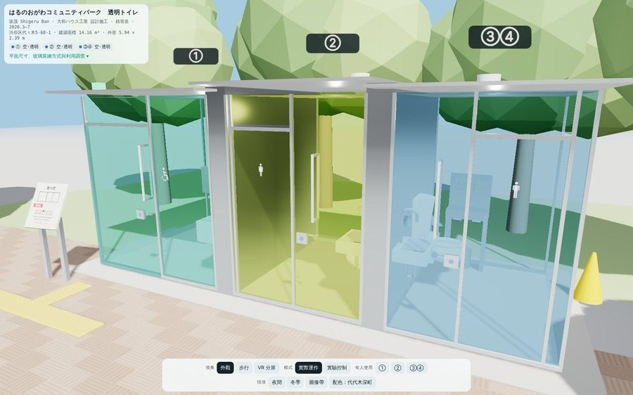
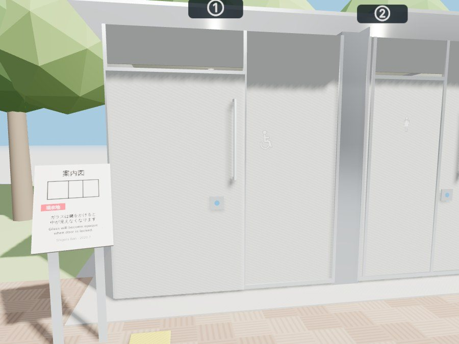
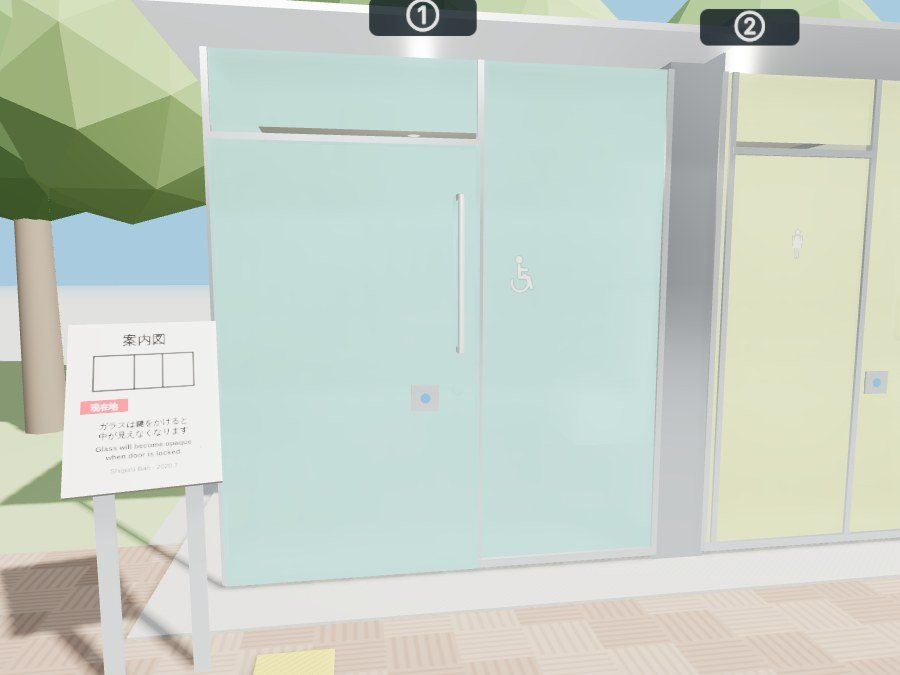
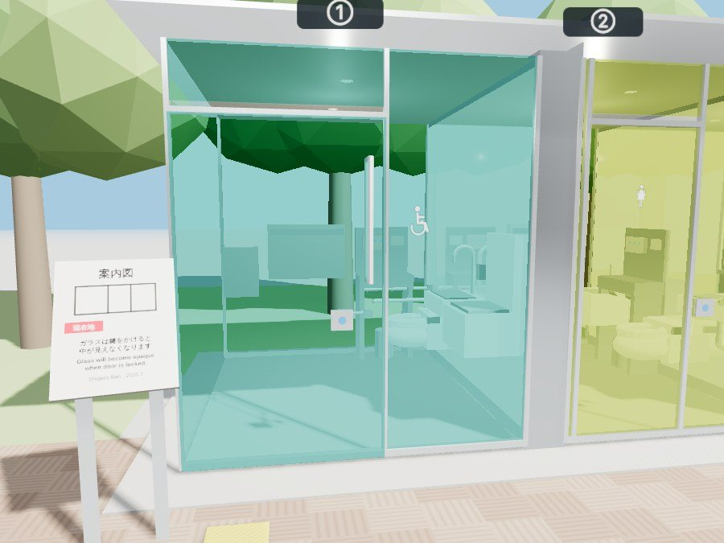
同一間廁所、同一時間、同樣的路人，只改「看不看得到」這一件事。
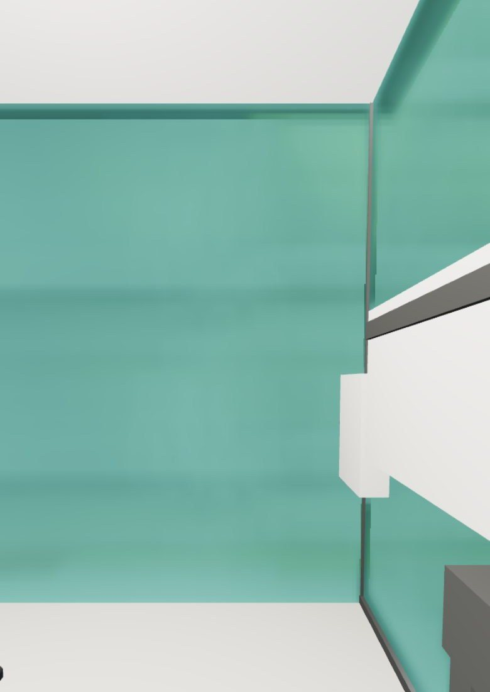
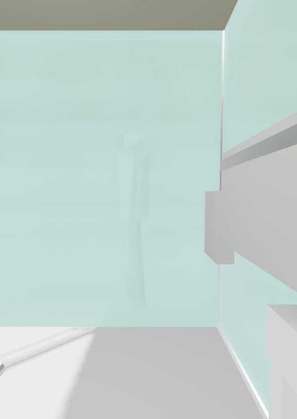
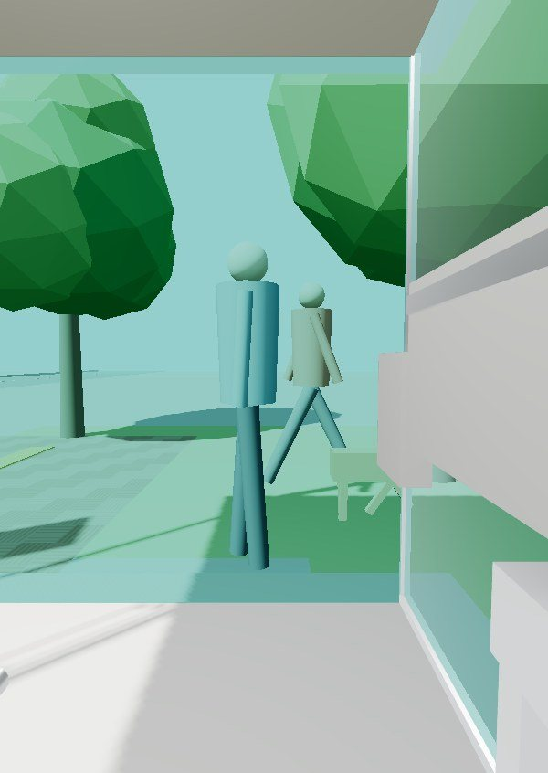
改為依「霧度 × 物體離玻璃的距離」套用三級模糊。坐姿視角，眼高 1.17 m。
工作流程圖 Workflow
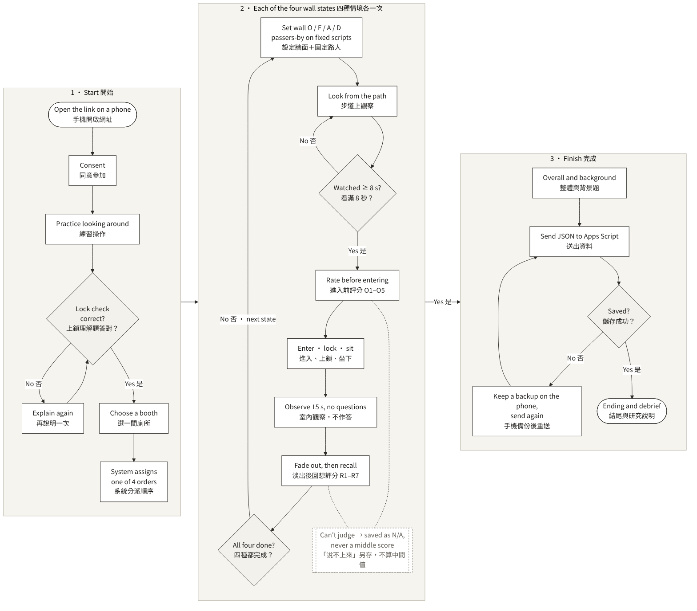
資料流 Data flow
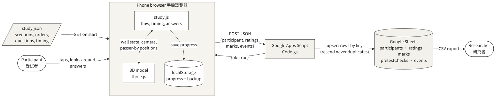
研究方法、四種牆面與參考文獻，見作品 002 Seen Through。
- Year
- 2026
- Course
- EMI course on computational tools for AEC · Assignment 1 and Final Project Stage 1
- Tools
- HTML, CSS, JavaScript, three.js, Google Apps Script, Git, GitHub Pages, Cloudflare, Claude (AI assistant)
- Links
- tosaint.com · github.com/tosaint/portfolio · A4 handout